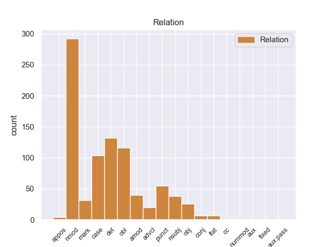
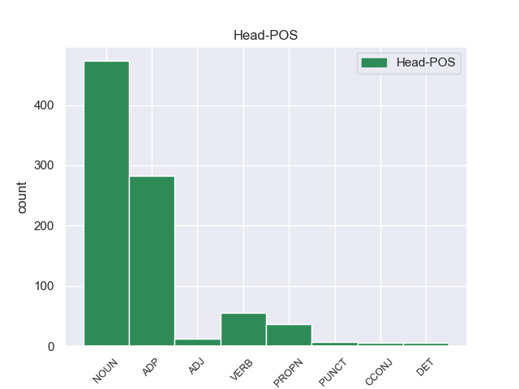
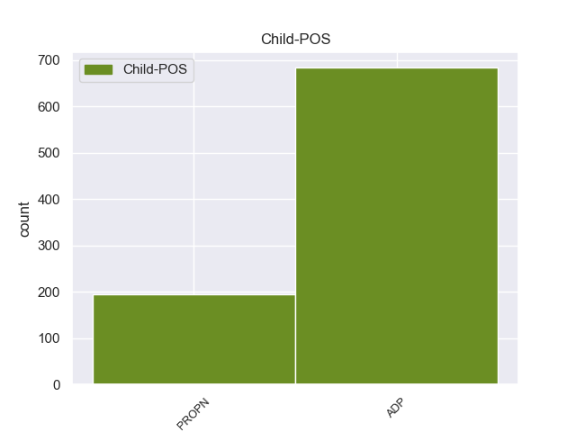

Distribution of features within this leaf



Agreement Rules sorted by frequency.
When the head token is NOUN and the dependent token is ADP.
1 Por _ _ _ _ 0 _ _ _
2 ello _ _ _ _ 0 _ _ _
3 cada _ _ _ _ 0 _ _ _
4 vez _ _ _ _ 0 _ _ _
5 más _ _ _ _ 0 _ _ _
6 españoles _ _ _ _ 0 _ _ _
7 están _ _ _ _ 0 _ _ _
8 optando _ _ _ _ 0 _ _ _
9 por _ _ _ _ 0 _ _ _
10 unas _ _ _ _ 0 _ _ _
11 vacaciones _ _ _ _ 0 _ _ _
12 inteligentes _ _ _ _ 0 _ _ _
13 que _ _ _ _ 0 _ _ _
14 implican implican ADP _ Gender=Fem|Number=Sing 17 nmod _ _
15 viajes _ _ _ _ 0 _ _ _
16 , _ _ _ _ 0 _ _ _
17 visitas visitas NOUN _ Gender=Fem|Number=Sing 0 _ _ _
18 turísticas _ _ _ _ 0 _ _ _
19 y _ _ _ _ 0 _ _ _
20 culturales _ _ _ _ 0 _ _ _
21 y _ _ _ _ 0 _ _ _
22 otras _ _ _ _ 0 _ _ _
23 actividades _ _ _ _ 0 _ _ _
24 de _ _ _ _ 0 _ _ _
25 ocio _ _ _ _ 0 _ _ _
26 con _ _ _ _ 0 _ _ _
27 el _ _ _ _ 0 _ _ _
28 aprendizaje _ _ _ _ 0 _ _ _
29 de _ _ _ _ 0 _ _ _
30 un _ _ _ _ 0 _ _ _
31 idioma _ _ _ _ 0 _ _ _
32 . _ _ _ _ 0 _ _ _
When the head token is NOUN and the dependent token is ADP. and the head token is ADP and the dependent token is ADP.
1 Según _ _ _ _ 0 _ _ _
2 estimación estimación ADP _ Gender=Fem|Number=Sing 0 _ _ _
3 2011 _ _ _ _ 0 _ _ _
4 contaba contaba ADP _ Gender=Fem|Number=Sing 2 det _ _
5 con _ _ _ _ 0 _ _ _
6 una _ _ _ _ 0 _ _ _
7 población _ _ _ _ 0 _ _ _
8 de _ _ _ _ 0 _ _ _
9 24 _ _ _ _ 0 _ _ _
10 103 _ _ _ _ 0 _ _ _
11 habitantes _ _ _ _ 0 _ _ _
12 . _ _ _ _ 0 _ _ _
When the head token is NOUN and the dependent token is ADP. and the head token is ADP and the dependent token is ADP. and the head token is NOUN and the dependent token is PROPN.
1 El _ _ _ _ 0 _ _ _
2 Football football NOUN _ Gender=Masc|Number=Sing 0 _ _ _
3 - _ _ _ _ 0 _ _ _
4 Club _ _ _ _ 0 _ _ _
5 Auch _ _ _ _ 0 _ _ _
6 es _ _ _ _ 0 _ _ _
7 un _ _ _ _ 0 _ _ _
8 equipo _ _ _ _ 0 _ _ _
9 profesional _ _ _ _ 0 _ _ _
10 de _ _ _ _ 0 _ _ _
11 rugby _ _ _ _ 0 _ _ _
12 de _ _ _ _ 0 _ _ _
13 Francia _ _ _ _ 0 _ _ _
14 de _ _ _ _ 0 _ _ _
15 la _ _ _ _ 0 _ _ _
16 ciudad _ _ _ _ 0 _ _ _
17 de _ _ _ _ 0 _ _ _
18 Auch auch PROPN _ Gender=Masc|Number=Sing 2 nmod _ _
19 ( _ _ _ _ 0 _ _ _
20 departamento _ _ _ _ 0 _ _ _
21 de _ _ _ _ 0 _ _ _
22 el _ _ _ _ 0 _ _ _
23 Gers _ _ _ _ 0 _ _ _
24 ) _ _ _ _ 0 _ _ _
25 . _ _ _ _ 0 _ _ _
When the head token is NOUN and the dependent token is ADP. and the head token is ADP and the dependent token is ADP. and the head token is NOUN and the dependent token is PROPN. and the head token is ADP and the dependent token is PROPN.
1 El _ _ _ _ 0 _ _ _
2 Kindle _ _ _ _ 0 _ _ _
3 DX _ _ _ _ 0 _ _ _
4 se _ _ _ _ 0 _ _ _
5 vende vende ADP _ Gender=Masc|Number=Sing 0 _ _ _
6 a _ _ _ _ 0 _ _ _
7 489 _ _ _ _ 0 _ _ _
8 dólares _ _ _ _ 0 _ _ _
9 tanto _ _ _ _ 0 _ _ _
10 en _ _ _ _ 0 _ _ _
11 el _ _ _ _ 0 _ _ _
12 mercado _ _ _ _ 0 _ _ _
13 internacional _ _ _ _ 0 _ _ _
14 como _ _ _ _ 0 _ _ _
15 en _ _ _ _ 0 _ _ _
16 Estados _ _ _ _ 0 _ _ _
17 Unidos _ _ _ _ 0 _ _ _
18 ( _ _ _ _ 0 _ _ _
19 contra _ _ _ _ 0 _ _ _
20 259 _ _ _ _ 0 _ _ _
21 dólares _ _ _ _ 0 _ _ _
22 el _ _ _ _ 0 _ _ _
23 Kindle kindle PROPN _ Gender=Masc|Number=Sing 5 nmod _ _
24 clásico _ _ _ _ 0 _ _ _
25 ) _ _ _ _ 0 _ _ _
26 a _ _ _ _ 0 _ _ _
27 partir _ _ _ _ 0 _ _ _
28 de _ _ _ _ 0 _ _ _
29 hoy _ _ _ _ 0 _ _ _
30 y _ _ _ _ 0 _ _ _
31 para _ _ _ _ 0 _ _ _
32 entrega _ _ _ _ 0 _ _ _
33 a _ _ _ _ 0 _ _ _
34 partir _ _ _ _ 0 _ _ _
35 de _ _ _ _ 0 _ _ _
36 el _ _ _ _ 0 _ _ _
37 19 _ _ _ _ 0 _ _ _
38 de _ _ _ _ 0 _ _ _
39 enero _ _ _ _ 0 _ _ _
40 . _ _ _ _ 0 _ _ _
When the head token is NOUN and the dependent token is ADP. and the head token is ADP and the dependent token is ADP. and the head token is NOUN and the dependent token is PROPN. and the head token is ADP and the dependent token is PROPN. and the head token is VERB and the dependent token is ADP.
1 The _ _ _ _ 0 _ _ _
2 Rolling _ _ _ _ 0 _ _ _
3 Stones _ _ _ _ 0 _ _ _
4 British _ _ _ _ 0 _ _ _
5 Tour _ _ _ _ 0 _ _ _
6 1966 _ _ _ _ 0 _ _ _
7 fue _ _ _ _ 0 _ _ _
8 una _ _ _ _ 0 _ _ _
9 gira _ _ _ _ 0 _ _ _
10 de _ _ _ _ 0 _ _ _
11 conciertos _ _ _ _ 0 _ _ _
12 musicales _ _ _ _ 0 _ _ _
13 realizada _ _ _ _ 0 _ _ _
14 por _ _ _ _ 0 _ _ _
15 la _ _ _ _ 0 _ _ _
16 banda banda ADP _ Gender=Fem|Number=Sing 19 nsubj _ _
17 , _ _ _ _ 0 _ _ _
18 que _ _ _ _ 0 _ _ _
19 comenzó comenzó VERB _ Gender=Fem|Number=Sing 0 _ _ _
20 el _ _ _ _ 0 _ _ _
21 23 _ _ _ _ 0 _ _ _
22 de _ _ _ _ 0 _ _ _
23 septiembre _ _ _ _ 0 _ _ _
24 de _ _ _ _ 0 _ _ _
25 1966 _ _ _ _ 0 _ _ _
26 y _ _ _ _ 0 _ _ _
27 finalizó _ _ _ _ 0 _ _ _
28 el _ _ _ _ 0 _ _ _
29 9 _ _ _ _ 0 _ _ _
30 de _ _ _ _ 0 _ _ _
31 octubre _ _ _ _ 0 _ _ _
32 de _ _ _ _ 0 _ _ _
33 el _ _ _ _ 0 _ _ _
34 mismo _ _ _ _ 0 _ _ _
35 añ12o _ _ _ _ 0 _ _ _
36 . _ _ _ _ 0 _ _ _
When the head token is NOUN and the dependent token is ADP. and the head token is ADP and the dependent token is ADP. and the head token is NOUN and the dependent token is PROPN. and the head token is ADP and the dependent token is PROPN. and the head token is VERB and the dependent token is ADP. and the head token is PROPN and the dependent token is PROPN.
1 Saint _ _ _ _ 0 _ _ _
2 - - PROPN _ Gender=Masc|Number=Sing 3 punct _ _
3 Hippolyte hippolyte PROPN _ Gender=Masc|Number=Sing 0 _ _ _
4 ( _ _ _ _ 0 _ _ _
5 en _ _ _ _ 0 _ _ _
6 occitano _ _ _ _ 0 _ _ _
7 Sent _ _ _ _ 0 _ _ _
8 Ipòli _ _ _ _ 0 _ _ _
9 ) _ _ _ _ 0 _ _ _
10 es _ _ _ _ 0 _ _ _
11 una _ _ _ _ 0 _ _ _
12 población _ _ _ _ 0 _ _ _
13 y _ _ _ _ 0 _ _ _
14 comuna _ _ _ _ 0 _ _ _
15 francesa _ _ _ _ 0 _ _ _
16 , _ _ _ _ 0 _ _ _
17 situada _ _ _ _ 0 _ _ _
18 en _ _ _ _ 0 _ _ _
19 la _ _ _ _ 0 _ _ _
20 región _ _ _ _ 0 _ _ _
21 de _ _ _ _ 0 _ _ _
22 Aquitania _ _ _ _ 0 _ _ _
23 , _ _ _ _ 0 _ _ _
24 departamento _ _ _ _ 0 _ _ _
25 de _ _ _ _ 0 _ _ _
26 Gironda _ _ _ _ 0 _ _ _
27 , _ _ _ _ 0 _ _ _
28 en _ _ _ _ 0 _ _ _
29 el _ _ _ _ 0 _ _ _
30 distrito _ _ _ _ 0 _ _ _
31 de _ _ _ _ 0 _ _ _
32 Libourne _ _ _ _ 0 _ _ _
33 y _ _ _ _ 0 _ _ _
34 cantón _ _ _ _ 0 _ _ _
35 de _ _ _ _ 0 _ _ _
36 Castillon _ _ _ _ 0 _ _ _
37 - _ _ _ _ 0 _ _ _
38 la _ _ _ _ 0 _ _ _
39 - _ _ _ _ 0 _ _ _
40 Bataille _ _ _ _ 0 _ _ _
41 . _ _ _ _ 0 _ _ _
When the head token is NOUN and the dependent token is ADP. and the head token is ADP and the dependent token is ADP. and the head token is NOUN and the dependent token is PROPN. and the head token is ADP and the dependent token is PROPN. and the head token is VERB and the dependent token is ADP. and the head token is PROPN and the dependent token is PROPN. and the head token is PROPN and the dependent token is ADP.
1 Saint _ _ _ _ 0 _ _ _
2 - _ _ _ _ 0 _ _ _
3 Hippolyte _ _ _ _ 0 _ _ _
4 ( _ _ _ _ 0 _ _ _
5 en _ _ _ _ 0 _ _ _
6 occitano _ _ _ _ 0 _ _ _
7 Sent _ _ _ _ 0 _ _ _
8 Ipòli _ _ _ _ 0 _ _ _
9 ) _ _ _ _ 0 _ _ _
10 es _ _ _ _ 0 _ _ _
11 una _ _ _ _ 0 _ _ _
12 población _ _ _ _ 0 _ _ _
13 y _ _ _ _ 0 _ _ _
14 comuna _ _ _ _ 0 _ _ _
15 francesa _ _ _ _ 0 _ _ _
16 , _ _ _ _ 0 _ _ _
17 situada _ _ _ _ 0 _ _ _
18 en _ _ _ _ 0 _ _ _
19 la _ _ _ _ 0 _ _ _
20 región _ _ _ _ 0 _ _ _
21 de _ _ _ _ 0 _ _ _
22 Aquitania _ _ _ _ 0 _ _ _
23 , _ _ _ _ 0 _ _ _
24 departamento departamento ADP _ Gender=Fem|Number=Sing 26 punct _ _
25 de _ _ _ _ 0 _ _ _
26 Gironda gironda PROPN _ Gender=Fem|Number=Sing 0 _ _ _
27 , _ _ _ _ 0 _ _ _
28 en _ _ _ _ 0 _ _ _
29 el _ _ _ _ 0 _ _ _
30 distrito _ _ _ _ 0 _ _ _
31 de _ _ _ _ 0 _ _ _
32 Libourne _ _ _ _ 0 _ _ _
33 y _ _ _ _ 0 _ _ _
34 cantón _ _ _ _ 0 _ _ _
35 de _ _ _ _ 0 _ _ _
36 Castillon _ _ _ _ 0 _ _ _
37 - _ _ _ _ 0 _ _ _
38 la _ _ _ _ 0 _ _ _
39 - _ _ _ _ 0 _ _ _
40 Bataille _ _ _ _ 0 _ _ _
41 . _ _ _ _ 0 _ _ _
When the head token is NOUN and the dependent token is ADP. and the head token is ADP and the dependent token is ADP. and the head token is NOUN and the dependent token is PROPN. and the head token is ADP and the dependent token is PROPN. and the head token is VERB and the dependent token is ADP. and the head token is PROPN and the dependent token is PROPN. and the head token is PROPN and the dependent token is ADP. and the head token is ADJ and the dependent token is ADP.
1 La _ _ _ _ 0 _ _ _
2 idea idea ADJ _ Gender=Fem|Number=Sing 0 _ _ _
3 inicial _ _ _ _ 0 _ _ _
4 de _ _ _ _ 0 _ _ _
5 este _ _ _ _ 0 _ _ _
6 tercer _ _ _ _ 0 _ _ _
7 libro _ _ _ _ 0 _ _ _
8 era _ _ _ _ 0 _ _ _
9 hacer _ _ _ _ 0 _ _ _
10 una _ _ _ _ 0 _ _ _
11 obra obra ADP _ Gender=Fem|Number=Sing 2 obl _ _
12 " _ _ _ _ 0 _ _ _
13 para _ _ _ _ 0 _ _ _
14 compartir _ _ _ _ 0 _ _ _
15 con _ _ _ _ 0 _ _ _
16 los _ _ _ _ 0 _ _ _
17 colegas _ _ _ _ 0 _ _ _
18 de _ _ _ _ 0 _ _ _
19 profesión _ _ _ _ 0 _ _ _
20 " _ _ _ _ 0 _ _ _
21 , _ _ _ _ 0 _ _ _
22 y _ _ _ _ 0 _ _ _
23 de _ _ _ _ 0 _ _ _
24 ahí _ _ _ _ 0 _ _ _
25 que _ _ _ _ 0 _ _ _
26 en _ _ _ _ 0 _ _ _
27 las _ _ _ _ 0 _ _ _
28 cantidades _ _ _ _ 0 _ _ _
29 de _ _ _ _ 0 _ _ _
30 los _ _ _ _ 0 _ _ _
31 ingredientes _ _ _ _ 0 _ _ _
32 se _ _ _ _ 0 _ _ _
33 incluya _ _ _ _ 0 _ _ _
34 la _ _ _ _ 0 _ _ _
35 versión _ _ _ _ 0 _ _ _
36 para _ _ _ _ 0 _ _ _
37 75 _ _ _ _ 0 _ _ _
38 comensales _ _ _ _ 0 _ _ _
39 , _ _ _ _ 0 _ _ _
40 pero _ _ _ _ 0 _ _ _
41 luego _ _ _ _ 0 _ _ _
42 se _ _ _ _ 0 _ _ _
43 cambió _ _ _ _ 0 _ _ _
44 a _ _ _ _ 0 _ _ _
45 la _ _ _ _ 0 _ _ _
46 dimensión _ _ _ _ 0 _ _ _
47 familiar _ _ _ _ 0 _ _ _
48 ( _ _ _ _ 0 _ _ _
49 2 _ _ _ _ 0 _ _ _
50 y _ _ _ _ 0 _ _ _
51 6 _ _ _ _ 0 _ _ _
52 personas _ _ _ _ 0 _ _ _
53 ) _ _ _ _ 0 _ _ _
54 . _ _ _ _ 0 _ _ _
When the head token is NOUN and the dependent token is ADP. and the head token is ADP and the dependent token is ADP. and the head token is NOUN and the dependent token is PROPN. and the head token is ADP and the dependent token is PROPN. and the head token is VERB and the dependent token is ADP. and the head token is PROPN and the dependent token is PROPN. and the head token is PROPN and the dependent token is ADP. and the head token is ADJ and the dependent token is ADP. and the head token is PUNCT and the dependent token is ADP.
1 Uno _ _ _ _ 0 _ _ _
2 de _ _ _ _ 0 _ _ _
3 ellos _ _ _ _ 0 _ _ _
4 es _ _ _ _ 0 _ _ _
5 el _ _ _ _ 0 _ _ _
6 queso _ _ _ _ 0 _ _ _
7 italiano _ _ _ _ 0 _ _ _
8 Casu _ _ _ _ 0 _ _ _
9 marzu _ _ _ _ 0 _ _ _
10 que _ _ _ _ 0 _ _ _
11 se _ _ _ _ 0 _ _ _
12 come _ _ _ _ 0 _ _ _
13 en _ _ _ _ 0 _ _ _
14 Cerdeña _ _ _ _ 0 _ _ _
15 y _ _ _ _ 0 _ _ _
16 que _ _ _ _ 0 _ _ _
17 tiene _ _ _ _ 0 _ _ _
18 larvas _ _ _ _ 0 _ _ _
19 , _ _ _ _ 0 _ _ _
20 otro _ _ _ _ 0 _ _ _
21 ejemplo ejemplo ADP _ Gender=Fem|Number=Sing 27 case _ _
22 es _ _ _ _ 0 _ _ _
23 el _ _ _ _ 0 _ _ _
24 Milbenkäse _ _ _ _ 0 _ _ _
25 que _ _ _ _ 0 _ _ _
26 se _ _ _ _ 0 _ _ _
27 elabora elabora PUNCT _ Gender=Fem|Number=Sing 0 _ _ _
28 con _ _ _ _ 0 _ _ _
29 los _ _ _ _ 0 _ _ _
30 excrementos _ _ _ _ 0 _ _ _
31 de _ _ _ _ 0 _ _ _
32 los _ _ _ _ 0 _ _ _
33 ácaros _ _ _ _ 0 _ _ _
34 . _ _ _ _ 0 _ _ _
When the head token is NOUN and the dependent token is ADP. and the head token is ADP and the dependent token is ADP. and the head token is NOUN and the dependent token is PROPN. and the head token is ADP and the dependent token is PROPN. and the head token is VERB and the dependent token is ADP. and the head token is PROPN and the dependent token is PROPN. and the head token is PROPN and the dependent token is ADP. and the head token is ADJ and the dependent token is ADP. and the head token is PUNCT and the dependent token is ADP. and the head token is VERB and the dependent token is PROPN.
1 Mientras _ _ _ _ 0 _ _ _
2 se _ _ _ _ 0 _ _ _
3 encuentra _ _ _ _ 0 _ _ _
4 en _ _ _ _ 0 _ _ _
5 su _ _ _ _ 0 _ _ _
6 oficina _ _ _ _ 0 _ _ _
7 , _ _ _ _ 0 _ _ _
8 aparece _ _ _ _ 0 _ _ _
9 el _ _ _ _ 0 _ _ _
10 nuevo _ _ _ _ 0 _ _ _
11 novio _ _ _ _ 0 _ _ _
12 de _ _ _ _ 0 _ _ _
13 Emma emma PROPN _ Gender=Fem|Number=Sing 26 nmod _ _
14 , _ _ _ _ 0 _ _ _
15 el _ _ _ _ 0 _ _ _
16 Dr. _ _ _ _ 0 _ _ _
17 Carl _ _ _ _ 0 _ _ _
18 Howell _ _ _ _ 0 _ _ _
19 , _ _ _ _ 0 _ _ _
20 un _ _ _ _ 0 _ _ _
21 dentista _ _ _ _ 0 _ _ _
22 que _ _ _ _ 0 _ _ _
23 se _ _ _ _ 0 _ _ _
24 ofrece _ _ _ _ 0 _ _ _
25 a _ _ _ _ 0 _ _ _
26 hablar hablar VERB _ Gender=Fem|Number=Sing 0 _ _ _
27 con _ _ _ _ 0 _ _ _
28 el _ _ _ _ 0 _ _ _
29 club _ _ _ _ 0 _ _ _
30 Glee _ _ _ _ 0 _ _ _
31 sobre _ _ _ _ 0 _ _ _
32 la _ _ _ _ 0 _ _ _
33 higiene _ _ _ _ 0 _ _ _
34 dental _ _ _ _ 0 _ _ _
35 . _ _ _ _ 0 _ _ _
When the head token is NOUN and the dependent token is ADP. and the head token is ADP and the dependent token is ADP. and the head token is NOUN and the dependent token is PROPN. and the head token is ADP and the dependent token is PROPN. and the head token is VERB and the dependent token is ADP. and the head token is PROPN and the dependent token is PROPN. and the head token is PROPN and the dependent token is ADP. and the head token is ADJ and the dependent token is ADP. and the head token is PUNCT and the dependent token is ADP. and the head token is VERB and the dependent token is PROPN. and the head token is DET and the dependent token is ADP.
1 Pop _ _ _ _ 0 _ _ _
2 resultón resultón DET _ Gender=Fem|Number=Sing 0 _ _ _
3 y _ _ _ _ 0 _ _ _
4 barato _ _ _ _ 0 _ _ _
5 que _ _ _ _ 0 _ _ _
6 cala _ _ _ _ 0 _ _ _
7 bien _ _ _ _ 0 _ _ _
8 en _ _ _ _ 0 _ _ _
9 las _ _ _ _ 0 _ _ _
10 generaciones _ _ _ _ 0 _ _ _
11 venideras _ _ _ _ 0 _ _ _
12 y _ _ _ _ 0 _ _ _
13 muestra muestra ADP _ Gender=Fem|Number=Sing 2 mark _ _
14 de _ _ _ _ 0 _ _ _
15 ello _ _ _ _ 0 _ _ _
16 da _ _ _ _ 0 _ _ _
17 la _ _ _ _ 0 _ _ _
18 capacidad _ _ _ _ 0 _ _ _
19 de _ _ _ _ 0 _ _ _
20 explotación _ _ _ _ 0 _ _ _
21 que _ _ _ _ 0 _ _ _
22 las _ _ _ _ 0 _ _ _
23 discográficas _ _ _ _ 0 _ _ _
24 tienen _ _ _ _ 0 _ _ _
25 con _ _ _ _ 0 _ _ _
26 este _ _ _ _ 0 _ _ _
27 tipo _ _ _ _ 0 _ _ _
28 de _ _ _ _ 0 _ _ _
29 grupos _ _ _ _ 0 _ _ _
30 . _ _ _ _ 0 _ _ _
When the head token is NOUN and the dependent token is ADP. and the head token is ADP and the dependent token is ADP. and the head token is NOUN and the dependent token is PROPN. and the head token is ADP and the dependent token is PROPN. and the head token is VERB and the dependent token is ADP. and the head token is PROPN and the dependent token is PROPN. and the head token is PROPN and the dependent token is ADP. and the head token is ADJ and the dependent token is ADP. and the head token is PUNCT and the dependent token is ADP. and the head token is VERB and the dependent token is PROPN. and the head token is DET and the dependent token is ADP. and the head token is ADJ and the dependent token is PROPN.
1 Fred _ _ _ _ 0 _ _ _
2 Jones _ _ _ _ 0 _ _ _
3 ( _ _ _ _ 0 _ _ _
4 Freddy freddy PROPN _ Gender=Masc|Number=Sing 35 nmod _ _
5 ) _ _ _ _ 0 _ _ _
6 es _ _ _ _ 0 _ _ _
7 un _ _ _ _ 0 _ _ _
8 personaje _ _ _ _ 0 _ _ _
9 ficticio _ _ _ _ 0 _ _ _
10 creado _ _ _ _ 0 _ _ _
11 por _ _ _ _ 0 _ _ _
12 Joe _ _ _ _ 0 _ _ _
13 Ruby _ _ _ _ 0 _ _ _
14 , _ _ _ _ 0 _ _ _
15 Ken _ _ _ _ 0 _ _ _
16 Spears _ _ _ _ 0 _ _ _
17 y _ _ _ _ 0 _ _ _
18 Fred _ _ _ _ 0 _ _ _
19 Silverman _ _ _ _ 0 _ _ _
20 y _ _ _ _ 0 _ _ _
21 producido _ _ _ _ 0 _ _ _
22 por _ _ _ _ 0 _ _ _
23 la _ _ _ _ 0 _ _ _
24 compañía _ _ _ _ 0 _ _ _
25 estadounidense _ _ _ _ 0 _ _ _
26 Hanna _ _ _ _ 0 _ _ _
27 - _ _ _ _ 0 _ _ _
28 Barbera _ _ _ _ 0 _ _ _
29 Productions _ _ _ _ 0 _ _ _
30 para _ _ _ _ 0 _ _ _
31 la _ _ _ _ 0 _ _ _
32 serie _ _ _ _ 0 _ _ _
33 televisiva _ _ _ _ 0 _ _ _
34 , _ _ _ _ 0 _ _ _
35 Scooby scooby ADJ _ Gender=Masc|Number=Sing 0 _ _ _
36 - _ _ _ _ 0 _ _ _
37 Doo _ _ _ _ 0 _ _ _
38 . _ _ _ _ 0 _ _ _
When the head token is NOUN and the dependent token is ADP. and the head token is ADP and the dependent token is ADP. and the head token is NOUN and the dependent token is PROPN. and the head token is ADP and the dependent token is PROPN. and the head token is VERB and the dependent token is ADP. and the head token is PROPN and the dependent token is PROPN. and the head token is PROPN and the dependent token is ADP. and the head token is ADJ and the dependent token is ADP. and the head token is PUNCT and the dependent token is ADP. and the head token is VERB and the dependent token is PROPN. and the head token is DET and the dependent token is ADP. and the head token is ADJ and the dependent token is PROPN. and the head token is CCONJ and the dependent token is ADP.
1 El _ _ _ _ 0 _ _ _
2 interés _ _ _ _ 0 _ _ _
3 real _ _ _ _ 0 _ _ _
4 de _ _ _ _ 0 _ _ _
5 el _ _ _ _ 0 _ _ _
6 Getafe _ _ _ _ 0 _ _ _
7 será _ _ _ _ 0 _ _ _
8 pedir _ _ _ _ 0 _ _ _
9 la _ _ _ _ 0 _ _ _
10 cesión _ _ _ _ 0 _ _ _
11 , _ _ _ _ 0 _ _ _
12 nunca _ _ _ _ 0 _ _ _
13 la _ _ _ _ 0 _ _ _
14 compra _ _ _ _ 0 _ _ _
15 , _ _ _ _ 0 _ _ _
16 ya _ _ _ _ 0 _ _ _
17 que _ _ _ _ 0 _ _ _
18 quiere _ _ _ _ 0 _ _ _
19 el _ _ _ _ 0 _ _ _
20 relevo _ _ _ _ 0 _ _ _
21 de _ _ _ _ 0 _ _ _
22 Soldado _ _ _ _ 0 _ _ _
23 que _ _ _ _ 0 _ _ _
24 se _ _ _ _ 0 _ _ _
25 marchó _ _ _ _ 0 _ _ _
26 a _ _ _ _ 0 _ _ _
27 el _ _ _ _ 0 _ _ _
28 Valencia _ _ _ _ 0 _ _ _
29 por _ _ _ _ 0 _ _ _
30 una _ _ _ _ 0 _ _ _
31 cifra cifra CCONJ _ Gender=Masc|Number=Sing 0 _ _ _
32 de _ _ _ _ 0 _ _ _
33 10 _ _ _ _ 0 _ _ _
34 millones _ _ _ _ 0 _ _ _
35 de _ _ _ _ 0 _ _ _
36 euros _ _ _ _ 0 _ _ _
37 y _ _ _ _ 0 _ _ _
38 no _ _ _ _ 0 _ _ _
39 quiere _ _ _ _ 0 _ _ _
40 gastar _ _ _ _ 0 _ _ _
41 ni _ _ _ _ 0 _ _ _
42 un _ _ _ _ 0 _ _ _
43 euro euro ADP _ Gender=Masc|Number=Sing 31 flat _ _
44 por _ _ _ _ 0 _ _ _
45 el _ _ _ _ 0 _ _ _
46 delantero _ _ _ _ 0 _ _ _
47 . _ _ _ _ 0 _ _ _
When the head token is NOUN and the dependent token is ADP. and the head token is ADP and the dependent token is ADP. and the head token is NOUN and the dependent token is PROPN. and the head token is ADP and the dependent token is PROPN. and the head token is VERB and the dependent token is ADP. and the head token is PROPN and the dependent token is PROPN. and the head token is PROPN and the dependent token is ADP. and the head token is ADJ and the dependent token is ADP. and the head token is PUNCT and the dependent token is ADP. and the head token is VERB and the dependent token is PROPN. and the head token is DET and the dependent token is ADP. and the head token is ADJ and the dependent token is PROPN. and the head token is CCONJ and the dependent token is ADP. and the head token is PUNCT and the dependent token is PROPN.
1 Las _ _ _ _ 0 _ _ _
2 otras _ _ _ _ 0 _ _ _
3 iglesias _ _ _ _ 0 _ _ _
4 de _ _ _ _ 0 _ _ _
5 la _ _ _ _ 0 _ _ _
6 parroquia _ _ _ _ 0 _ _ _
7 son _ _ _ _ 0 _ _ _
8 San _ _ _ _ 0 _ _ _
9 Samuele samuele PUNCT _ Gender=Masc|Number=Sing 0 _ _ _
10 , _ _ _ _ 0 _ _ _
11 San _ _ _ _ 0 _ _ _
12 Maurizio _ _ _ _ 0 _ _ _
13 , _ _ _ _ 0 _ _ _
14 San _ _ _ _ 0 _ _ _
15 Vidal _ _ _ _ 0 _ _ _
16 y _ _ _ _ 0 _ _ _
17 el _ _ _ _ 0 _ _ _
18 oratorio _ _ _ _ 0 _ _ _
19 de _ _ _ _ 0 _ _ _
20 San _ _ _ _ 0 _ _ _
21 Angelo angelo PROPN _ Gender=Masc|Number=Sing 9 nmod _ _
22 degli _ _ _ _ 0 _ _ _
23 Zoppi _ _ _ _ 0 _ _ _
24 . _ _ _ _ 0 _ _ _
When the head token is NOUN and the dependent token is ADP. and the head token is ADP and the dependent token is ADP. and the head token is NOUN and the dependent token is PROPN. and the head token is ADP and the dependent token is PROPN. and the head token is VERB and the dependent token is ADP. and the head token is PROPN and the dependent token is PROPN. and the head token is PROPN and the dependent token is ADP. and the head token is ADJ and the dependent token is ADP. and the head token is PUNCT and the dependent token is ADP. and the head token is VERB and the dependent token is PROPN. and the head token is DET and the dependent token is ADP. and the head token is ADJ and the dependent token is PROPN. and the head token is CCONJ and the dependent token is ADP. and the head token is PUNCT and the dependent token is PROPN. and the head token is CCONJ and the dependent token is PROPN.
1 También _ _ _ _ 0 _ _ _
2 encuentra _ _ _ _ 0 _ _ _
3 frecuencias _ _ _ _ 0 _ _ _
4 importantes _ _ _ _ 0 _ _ _
5 en _ _ _ _ 0 _ _ _
6 Papúa papúa PROPN _ Gender=Fem|Number=Plur 8 nmod _ _
7 Nueva _ _ _ _ 0 _ _ _
8 Guinea guinea CCONJ _ Definite=Def|Gender=Fem|Number=Sing|PronType=Art 0 _ _ _
9 con _ _ _ _ 0 _ _ _
10 33 _ _ _ _ 0 _ _ _
11 % _ _ _ _ 0 _ _ _
12 , _ _ _ _ 0 _ _ _
13 Nueva _ _ _ _ 0 _ _ _
14 Bretaña _ _ _ _ 0 _ _ _
15 31 _ _ _ _ 0 _ _ _
16 % _ _ _ _ 0 _ _ _
17 , _ _ _ _ 0 _ _ _
18 Islas _ _ _ _ 0 _ _ _
19 Trobriand _ _ _ _ 0 _ _ _
20 30 _ _ _ _ 0 _ _ _
21 % _ _ _ _ 0 _ _ _
22 y _ _ _ _ 0 _ _ _
23 las _ _ _ _ 0 _ _ _
24 Molucas _ _ _ _ 0 _ _ _
25 21 _ _ _ _ 0 _ _ _
26 % _ _ _ _ 0 _ _ _
27 . _ _ _ _ 0 _ _ _
When the head token is NOUN and the dependent token is ADP. and the head token is ADP and the dependent token is ADP. and the head token is NOUN and the dependent token is PROPN. and the head token is ADP and the dependent token is PROPN. and the head token is VERB and the dependent token is ADP. and the head token is PROPN and the dependent token is PROPN. and the head token is PROPN and the dependent token is ADP. and the head token is ADJ and the dependent token is ADP. and the head token is PUNCT and the dependent token is ADP. and the head token is VERB and the dependent token is PROPN. and the head token is DET and the dependent token is ADP. and the head token is ADJ and the dependent token is PROPN. and the head token is CCONJ and the dependent token is ADP. and the head token is PUNCT and the dependent token is PROPN. and the head token is CCONJ and the dependent token is PROPN. and the head token is DET and the dependent token is PROPN.
1 La _ _ _ _ 0 _ _ _
2 renta renta DET _ Gender=Fem|Number=Sing 0 _ _ _
3 per _ _ _ _ 0 _ _ _
4 cápita cápita PROPN _ Gender=Fem|Number=Sing 2 nmod _ _
5 para _ _ _ _ 0 _ _ _
6 el _ _ _ _ 0 _ _ _
7 condado _ _ _ _ 0 _ _ _
8 era _ _ _ _ 0 _ _ _
9 de _ _ _ _ 0 _ _ _
10 $ _ _ _ _ 0 _ _ _
11 16,267 _ _ _ _ 0 _ _ _
12 . _ _ _ _ 0 _ _ _
Disagree Examples:
1 Como _ _ _ _ 0 _ _ _
2 la _ _ _ _ 0 _ _ _
3 mayoría _ _ _ _ 0 _ _ _
4 de _ _ _ _ 0 _ _ _
5 las _ _ _ _ 0 _ _ _
6 naciones _ _ _ _ 0 _ _ _
7 miembro miembro NOUN _ Gender=Masc|Number=Sing 0 _ _ _
8 de _ _ _ _ 0 _ _ _
9 la _ _ _ _ 0 _ _ _
10 Mancomunidad mancomunidad PROPN _ Gender=Fem|Number=Sing 7 nmod _ _
11 Británica _ _ _ _ 0 _ _ _
12 de _ _ _ _ 0 _ _ _
13 Naciones _ _ _ _ 0 _ _ _
14 , _ _ _ _ 0 _ _ _
15 la _ _ _ _ 0 _ _ _
16 bandera _ _ _ _ 0 _ _ _
17 posee _ _ _ _ 0 _ _ _
18 un _ _ _ _ 0 _ _ _
19 fondo _ _ _ _ 0 _ _ _
20 liso _ _ _ _ 0 _ _ _
21 con _ _ _ _ 0 _ _ _
22 la _ _ _ _ 0 _ _ _
23 Union _ _ _ _ 0 _ _ _
24 Jack _ _ _ _ 0 _ _ _
25 en _ _ _ _ 0 _ _ _
26 la _ _ _ _ 0 _ _ _
27 esquina _ _ _ _ 0 _ _ _
28 superior _ _ _ _ 0 _ _ _
29 izquierda _ _ _ _ 0 _ _ _
30 . _ _ _ _ 0 _ _ _
1 Al _ _ _ _ 0 _ _ _
2 final _ _ _ _ 0 _ _ _
3 , _ _ _ _ 0 _ _ _
4 Calvin _ _ _ _ 0 _ _ _
5 y _ _ _ _ 0 _ _ _
6 Rusty _ _ _ _ 0 _ _ _
7 , _ _ _ _ 0 _ _ _
8 así _ _ _ _ 0 _ _ _
9 como _ _ _ _ 0 _ _ _
10 los _ _ _ _ 0 _ _ _
11 otros _ _ _ _ 0 _ _ _
12 novatos _ _ _ _ 0 _ _ _
13 , _ _ _ _ 0 _ _ _
14 son _ _ _ _ 0 _ _ _
15 nombrados _ _ _ _ 0 _ _ _
16 hermanos _ _ _ _ 0 _ _ _
17 en _ _ _ _ 0 _ _ _
18 sus _ _ _ _ 0 _ _ _
19 respectivas _ _ _ _ 0 _ _ _
20 fraternidades _ _ _ _ 0 _ _ _
21 , _ _ _ _ 0 _ _ _
22 mientras mientras ADP _ Gender=Masc|Number=Sing 26 mark _ _
23 que _ _ _ _ 0 _ _ _
24 Frannie _ _ _ _ 0 _ _ _
25 se _ _ _ _ 0 _ _ _
26 marcha marcha ADP _ Gender=Fem|Number=Sing 0 _ _ _
27 y _ _ _ _ 0 _ _ _
28 crea _ _ _ _ 0 _ _ _
29 una _ _ _ _ 0 _ _ _
30 nueva _ _ _ _ 0 _ _ _
31 fraternidad _ _ _ _ 0 _ _ _
32 , _ _ _ _ 0 _ _ _
33 llevándo _ _ _ _ 0 _ _ _
34 se _ _ _ _ 0 _ _ _
35 a _ _ _ _ 0 _ _ _
36 muchas _ _ _ _ 0 _ _ _
37 de _ _ _ _ 0 _ _ _
38 las _ _ _ _ 0 _ _ _
39 hermanas _ _ _ _ 0 _ _ _
40 de _ _ _ _ 0 _ _ _
41 ΖΒΖ _ _ _ _ 0 _ _ _
42 con _ _ _ _ 0 _ _ _
43 ella _ _ _ _ 0 _ _ _
44 . _ _ _ _ 0 _ _ _
1 El _ _ _ _ 0 _ _ _
2 profesor _ _ _ _ 0 _ _ _
3 Estafilocóquez _ _ _ _ 0 _ _ _
4 , _ _ _ _ 0 _ _ _
5 un _ _ _ _ 0 _ _ _
6 científico _ _ _ _ 0 _ _ _
7 que _ _ _ _ 0 _ _ _
8 trabajaba trabajaba ADP _ Gender=Masc|Number=Sing 19 mark _ _
9 para _ _ _ _ 0 _ _ _
10 la _ _ _ _ 0 _ _ _
11 T.I.A. _ _ _ _ 0 _ _ _
12 y _ _ _ _ 0 _ _ _
13 se _ _ _ _ 0 _ _ _
14 volvió _ _ _ _ 0 _ _ _
15 loco _ _ _ _ 0 _ _ _
16 , _ _ _ _ 0 _ _ _
17 se _ _ _ _ 0 _ _ _
18 ha _ _ _ _ 0 _ _ _
19 fugado fugado ADP _ Gender=Fem|Number=Sing 0 _ _ _
20 de _ _ _ _ 0 _ _ _
21 el _ _ _ _ 0 _ _ _
22 sanatorio _ _ _ _ 0 _ _ _
23 y _ _ _ _ 0 _ _ _
24 ha _ _ _ _ 0 _ _ _
25 robado _ _ _ _ 0 _ _ _
26 en _ _ _ _ 0 _ _ _
27 la _ _ _ _ 0 _ _ _
28 sala _ _ _ _ 0 _ _ _
29 de _ _ _ _ 0 _ _ _
30 los _ _ _ _ 0 _ _ _
31 horrores _ _ _ _ 0 _ _ _
32 de _ _ _ _ 0 _ _ _
33 el _ _ _ _ 0 _ _ _
34 museo _ _ _ _ 0 _ _ _
35 de _ _ _ _ 0 _ _ _
36 cera _ _ _ _ 0 _ _ _
37 . _ _ _ _ 0 _ _ _
1 La _ _ _ _ 0 _ _ _
2 escena escena ADP _ Gender=Fem|Number=Sing 28 det _ _
3 " _ _ _ _ 0 _ _ _
4 Enfin _ _ _ _ 0 _ _ _
5 , _ _ _ _ 0 _ _ _
6 il _ _ _ _ 0 _ _ _
7 est _ _ _ _ 0 _ _ _
8 en _ _ _ _ 0 _ _ _
9 ma _ _ _ _ 0 _ _ _
10 puissance _ _ _ _ 0 _ _ _
11 " _ _ _ _ 0 _ _ _
12 , _ _ _ _ 0 _ _ _
13 es _ _ _ _ 0 _ _ _
14 un _ _ _ _ 0 _ _ _
15 manifiesto _ _ _ _ 0 _ _ _
16 de _ _ _ _ 0 _ _ _
17 que _ _ _ _ 0 _ _ _
18 lo _ _ _ _ 0 _ _ _
19 " _ _ _ _ 0 _ _ _
20 maravilloso _ _ _ _ 0 _ _ _
21 " _ _ _ _ 0 _ _ _
22 no _ _ _ _ 0 _ _ _
23 era _ _ _ _ 0 _ _ _
24 lo _ _ _ _ 0 _ _ _
25 único _ _ _ _ 0 _ _ _
26 que _ _ _ _ 0 _ _ _
27 el _ _ _ _ 0 _ _ _
28 espectáculo espectáculo NOUN _ Gender=Masc|Number=Sing 0 _ _ _
29 operístico _ _ _ _ 0 _ _ _
30 añadía _ _ _ _ 0 _ _ _
31 a _ _ _ _ 0 _ _ _
32 la _ _ _ _ 0 _ _ _
33 tragedia _ _ _ _ 0 _ _ _
34 y _ _ _ _ 0 _ _ _
35 de _ _ _ _ 0 _ _ _
36 que _ _ _ _ 0 _ _ _
37 lo _ _ _ _ 0 _ _ _
38 sublime _ _ _ _ 0 _ _ _
39 puede _ _ _ _ 0 _ _ _
40 ser _ _ _ _ 0 _ _ _
41 conseguido _ _ _ _ 0 _ _ _
42 a _ _ _ _ 0 _ _ _
43 través _ _ _ _ 0 _ _ _
44 de _ _ _ _ 0 _ _ _
45 las _ _ _ _ 0 _ _ _
46 inflexiones _ _ _ _ 0 _ _ _
47 de _ _ _ _ 0 _ _ _
48 la _ _ _ _ 0 _ _ _
49 voz _ _ _ _ 0 _ _ _
50 y _ _ _ _ 0 _ _ _
51 sin _ _ _ _ 0 _ _ _
52 necesidad _ _ _ _ 0 _ _ _
53 de _ _ _ _ 0 _ _ _
54 aparato _ _ _ _ 0 _ _ _
55 visual _ _ _ _ 0 _ _ _
56 : _ _ _ _ 0 _ _ _
57 el _ _ _ _ 0 _ _ _
58 movimiento _ _ _ _ 0 _ _ _
59 escénico _ _ _ _ 0 _ _ _
60 es _ _ _ _ 0 _ _ _
61 nulo _ _ _ _ 0 _ _ _
62 hasta _ _ _ _ 0 _ _ _
63 que _ _ _ _ 0 _ _ _
64 el _ _ _ _ 0 _ _ _
65 dilema _ _ _ _ 0 _ _ _
66 interno _ _ _ _ 0 _ _ _
67 de _ _ _ _ 0 _ _ _
68 Armida _ _ _ _ 0 _ _ _
69 se _ _ _ _ 0 _ _ _
70 resuelve _ _ _ _ 0 _ _ _
71 y _ _ _ _ 0 _ _ _
72 vuelve _ _ _ _ 0 _ _ _
73 en _ _ _ _ 0 _ _ _
74 sí _ _ _ _ 0 _ _ _
75 para _ _ _ _ 0 _ _ _
76 invocar _ _ _ _ 0 _ _ _
77 a _ _ _ _ 0 _ _ _
78 sus _ _ _ _ 0 _ _ _
79 secuaces _ _ _ _ 0 _ _ _
80 en _ _ _ _ 0 _ _ _
81 un _ _ _ _ 0 _ _ _
82 aria _ _ _ _ 0 _ _ _
83 estrófica _ _ _ _ 0 _ _ _
84 ( _ _ _ _ 0 _ _ _
85 " _ _ _ _ 0 _ _ _
86 Venez _ _ _ _ 0 _ _ _
87 , _ _ _ _ 0 _ _ _
88 venez _ _ _ _ 0 _ _ _
89 , _ _ _ _ 0 _ _ _
90 secondez _ _ _ _ 0 _ _ _
91 mes _ _ _ _ 0 _ _ _
92 désirs _ _ _ _ 0 _ _ _
93 " _ _ _ _ 0 _ _ _
94 ) _ _ _ _ 0 _ _ _
95 , _ _ _ _ 0 _ _ _
96 quienes _ _ _ _ 0 _ _ _
97 se _ _ _ _ 0 _ _ _
98 llevan _ _ _ _ 0 _ _ _
99 a _ _ _ _ 0 _ _ _
100 Reinaldo _ _ _ _ 0 _ _ _
101 a _ _ _ _ 0 _ _ _
102 su _ _ _ _ 0 _ _ _
103 palacio _ _ _ _ 0 _ _ _
104 . _ _ _ _ 0 _ _ _
1 El _ _ _ _ 0 _ _ _
2 aumento aumento ADP _ Gender=Masc|Number=Sing 11 obl _ _
3 de _ _ _ _ 0 _ _ _
4 la _ _ _ _ 0 _ _ _
5 superficie _ _ _ _ 0 _ _ _
6 de _ _ _ _ 0 _ _ _
7 la _ _ _ _ 0 _ _ _
8 vela _ _ _ _ 0 _ _ _
9 hace _ _ _ _ 0 _ _ _
10 la _ _ _ _ 0 _ _ _
11 maniobra maniobra NOUN _ Gender=Fem|Number=Sing 0 _ _ _
12 más _ _ _ _ 0 _ _ _
13 difícil _ _ _ _ 0 _ _ _
14 que _ _ _ _ 0 _ _ _
15 la _ _ _ _ 0 _ _ _
16 de _ _ _ _ 0 _ _ _
17 un _ _ _ _ 0 _ _ _
18 foque _ _ _ _ 0 _ _ _
19 . _ _ _ _ 0 _ _ _